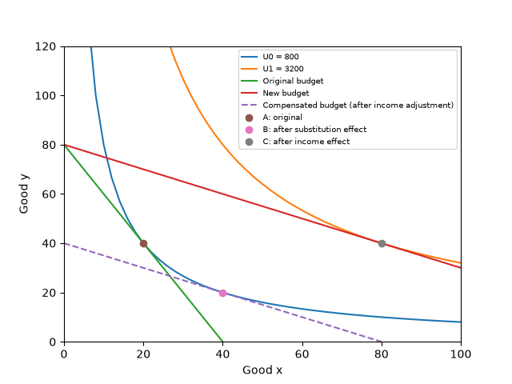
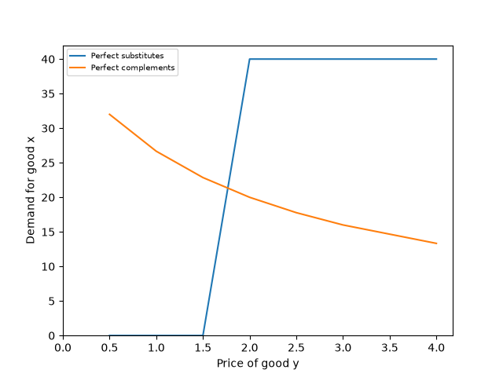

第 4 章: スルツキー分解と財の種類¶
4.1 この章の地図¶
財 x の価格が下がると、需要が増えます。この増え方には、2 つの理由があります。
- 代替効果: 財 x が、財 y に比べて、割安になったので、財 x に乗り換える（同じ無差別曲線の上の動き）
- 所得効果: 値下がりで、買える量が増え、実質所得が上がったので、買い方が変わる（予算線の平行移動）
価格効果 = 代替効果 + 所得効果
この 2 つに分けることを、スルツキー分解と言います。所得効果の符号で、財は、上級財・下級財・ギッフェン財に分かれます。この章は、第 1 部（消費者行動と需要曲線）の最後で、到達チェックも行います。

| 項目 | 内容 |
|---|---|
| 経済学の題材 | スルツキー分解（代替効果・所得効果）、上級財・下級財・ギッフェン財、代替財・補完財・独立財 |
| 使う Python の機能 | 関数、dataclass（frozen=True）、タプル、テスト（pytest）。NumPy は、この章では使いません |
| 新しく導入するライブラリ | なし |
| 完成形 | compensated_bundle、SlutskyResult、slutsky_decomposition、classify_by_effects、demand_perfect_substitutes、demand_perfect_complements、cross_price_relation |
| ファイル | 実装: lib/chapter04/slutsky.py、lib/chapter04/plot.py（図）／テスト: test/chapter04/test_slutsky.py、test/chapter04/test_plot.py（自分で書くときは、practice/chapter04/ に、同じ名前で作ります） |
| データ | なし（手計算できる小さな例だけ） |
経済学の式とコードの対応¶
| 経済学 | 式 | コード |
|---|---|---|
| 補償需要 | 新しい価格のもとで、元の効用を、最も安く達成する点 | compensated_bundle(level, px, py) |
| スルツキー分解 | 価格効果 = 代替効果 + 所得効果 | slutsky_decomposition(income, px_old, px_new, py) |
| 代替効果 | 補償需要の x − 元の x | result.substitution_effect |
| 所得効果 | 最終の x − 補償需要の x | result.income_effect |
| 財の種類 | 所得効果の符号と、代替効果との大きさの比較 | classify_by_effects(substitution_effect, income_effect) |
| 代替財・補完財 | 財 y の値上げで、財 x の需要が増えるか、減るか | cross_price_relation(change_in_demand) |
前提とする章¶
| できること | 場所 |
|---|---|
| 最適消費点を求める | この連載の第 2 章 |
| 需要曲線・弾力性を求める | この連載の第 3 章 |
4.2 準備¶
cd apps/micro-basics-programming/python
uv sync
uv run pytest test/chapter04
43 passed
自分でコードを書くときは、practice/chapter04/ に、slutsky.py と test_slutsky.py を作ります。第 1〜3 章の関数は、完成形の lib/ から import してかまいません（この記事の読み方を参照）。
4.3 予想する¶
効用が U = x·y、所得が 80、財 y の価格が Py = 1 の消費者がいます。財 x の価格が、Px = 2 から 0.5 に下がります。紙で、手計算で答えてください。答えは、この節には書いてありません。「プログラミング」の節の「予想の答え合わせ」で、プログラムを動かして確かめます。
- 値下げの前の最適消費点 A は、どこですか。元の効用（A の効用）を保ったまま、新しい価格比（0.5 ÷ 1）で、最も安く買える点 B は、どこですか
- 新しい価格での最適消費点 C は、どこですか
- 財 x の量で見て、代替効果（A → B）、所得効果（B → C）、価格効果（A → C）は、それぞれ、いくつですか。この財は、上級財・下級財・ギッフェン財の、どれですか
- 代替効果が +20、所得効果が −30 の財は、何ですか。完全代替財（U = x + y）で、所得 80、Px = 2 のとき、Py = 1 と Py = 3 での財 x の需要は、いくつですか。完全補完財（U = min(x, y)）で、Py = 1 と Py = 2 では、いくつですか。それぞれ、代替財・補完財の、どちらですか
4.4 スルツキー分解の考え方¶
価格効果を 2 つに分ける¶
財 x の価格が下がると、予算線の x 切片が、右へ動きます。最適消費点は、A から C へ動きます。この動きを、2 段階に分けます。
- 代替効果（A → B）: 元の無差別曲線の上で、新しい価格比の接点まで動く。実質所得（効用）は、同じまま。割安になった財 x が、増える
- 所得効果（B → C）: 予算線が、平行に動く。値下がりで、実質所得が上がったので、買い方が変わる
代替効果は、値下げで、必ず正（財 x が増える）です。所得効果の符号は、財の種類で決まります。
財の種類¶
| 財 | 所得効果（値下げのとき） | 価格効果 | 需要曲線 |
|---|---|---|---|
| 上級財 | 正（所得が上がると、増やす） | 正（代替 + 所得） | 右下がり |
| 下級財 | 負（所得が上がると、減らす）。ただし、大きさは代替効果より小さい | 正 | 右下がり |
| ギッフェン財 | 負で、大きさが代替効果より大きい | 負（値下げで、需要が減る） | 右上がり |
ギッフェン財は、「下級財で、かつ、所得効果が代替効果を上回る」財です。値上げで、実質所得が下がり、より安い財（ギッフェン財）への依存が強まって、需要が増える、という珍しい財です。
代替財と補完財¶
| 関係 | 財 y の値上げで、財 x の需要は | 例 |
|---|---|---|
| 代替財 | 増える | パンと米 |
| 補完財 | 減る | パンとジャム |
| 独立財 | 変わらない | — |
完全代替財（U = x + y）の無差別曲線は直線で、安いほうだけを買います。完全補完財（U = min(x, y)）は、L 字で、一組の値段（Px + Py）で、所得を割った量を買います。
4.5 プログラミング¶
Red: 補償需要と、スルツキー分解のテスト¶
最初のテストを書きます。元の効用 800 を保つ点は、新しい価格比（0.5）での接点で、(40, 20) です。
import pytest
from lib.chapter01.utility import cobb_douglas_utility
from lib.chapter02.budget import optimal_bundle
from lib.chapter04.slutsky import (
classify_by_effects,
compensated_bundle,
cross_price_relation,
demand_perfect_complements,
demand_perfect_substitutes,
slutsky_decomposition,
)
M, PY = 80, 1
def test_補償された消費点は元の効用を保つ() -> None:
x, y = compensated_bundle(800, 0.5, PY)
assert (x, y) == pytest.approx((40, 20))
assert cobb_douglas_utility(x, y) == pytest.approx(800)
def test_補償された消費点で限界代替率は新しい価格比と等しい() -> None:
x, y = compensated_bundle(800, 0.5, PY)
assert y / x == pytest.approx(0.5 / PY)
def test_値下げの価格効果は代替効果と所得効果の和() -> None:
result = slutsky_decomposition(M, 2, 0.5, PY)
assert result.original == (20, 40)
assert result.substitution == pytest.approx((40, 20))
assert result.final == pytest.approx((80, 40))
assert result.substitution_effect == pytest.approx(20)
assert result.income_effect == pytest.approx(40)
assert result.price_effect == pytest.approx(60)
def test_代替効果のあとの点の支出は元の所得より少ない() -> None:
result = slutsky_decomposition(M, 2, 0.5, PY)
x, y = result.substitution
assert 0.5 * x + PY * y == pytest.approx(40)
compensated_bundle がまだないので、テストは失敗します（Red）。
テストの import の一覧は、完成形の全関数です。自分で書くときは、関数を 1 つ書くたびに、その名前を、import に足していってかまいません（まだ書いていない関数を import すると、ImportError になり、Green になりません）。
Green: スルツキー分解を実装する¶
補償需要は、新しい価格のもとで、元の効用を、最も安く達成する点です。最適点では、限界代替率 = 価格比なので、y = (b ÷ a)(Px ÷ Py)·x となり、これを効用の式に入れて、x を求めます（閉じた式）。
@dataclass(frozen=True)
class SlutskyResult:
"""財 x のスルツキー分解。3 つの点と、3 つの効果（財 x の量の変化）。"""
original: tuple[float, float]
substitution: tuple[float, float]
final: tuple[float, float]
substitution_effect: float
income_effect: float
price_effect: float
def compensated_bundle(
utility_level: float, px: float, py: float, a: float = 1.0, b: float = 1.0
) -> tuple[float, float]:
"""新しい価格のもとで、効用 utility_level を、最も安く達成する点（補償需要）。
最適点では MRS = Px ÷ Py なので、y = (b ÷ a)(Px ÷ Py)·x。
これを効用の式に入れて、x を求める。
"""
validate_positive(utility_level, "効用の水準は、正にする")
validate_positive(px, "財 x の価格は、正にする")
validate_positive(py, "財 y の価格は、正にする")
ratio = (b / a) * (px / py)
x = (utility_level / ratio**b) ** (1 / (a + b))
return x, ratio * x
def slutsky_decomposition(
income: float,
px_old: float,
px_new: float,
py: float,
a: float = 1.0,
b: float = 1.0,
) -> SlutskyResult:
"""財 x の価格が px_old から px_new に変わったときの、スルツキー分解。"""
original = optimal_bundle(income, px_old, py, a, b)
level = cobb_douglas_utility(*original, a, b)
substitution = compensated_bundle(level, px_new, py, a, b)
final = optimal_bundle(income, px_new, py, a, b)
return SlutskyResult(
original,
substitution,
final,
substitution[0] - original[0],
final[0] - substitution[0],
final[0] - original[0],
)
import と補助関数（写すときに足す）
記事の抜粋には、import と、先頭が _ の補助関数・定数を、省いています。完成形のファイルの先頭にある、次の部分を、写してください。
lib/chapter04/plot.py
from collections.abc import Sequence
import matplotlib.pyplot as plt
from matplotlib.axes import Axes
from matplotlib.figure import Figure
from lib.chapter01.utility import cobb_douglas_utility, indifference_curve_y
from lib.chapter02.budget import budget_intercepts
from lib.chapter04.slutsky import (
demand_perfect_complements,
demand_perfect_substitutes,
slutsky_decomposition,
)
_POINTS = 50
def _style(ax: Axes) -> None:
ax.set_xlim(left=0)
ax.set_ylim(bottom=0)
ax.legend(fontsize="x-small")
lib/chapter04/slutsky.py
from dataclasses import dataclass
from lib.chapter01.utility import cobb_douglas_utility
from lib.chapter01.validation import validate_non_negative, validate_positive
from lib.chapter02.budget import optimal_bundle
# 効果の符号の判定で、同じ値と見なす誤差
_TOLERANCE = 1e-9
def _check_prices(income: float, px: float, py: float) -> None:
validate_non_negative(income, "所得は、0 以上にする")
validate_positive(px, "財 x の価格は、正にする")
validate_positive(py, "財 y の価格は、正にする")
test/chapter04/test_plot.py
from collections.abc import Sequence
from typing import cast
import pytest
from matplotlib.axes import Axes
from matplotlib.lines import Line2D
from lib.chapter04.plot import plot_cross_price, plot_slutsky
結果は、SlutskyResult（frozen=True の dataclass）にまとめます。3 つの点（元・代替効果のあと・最終）と、3 つの効果（財 x の量の変化）です。価格効果は、元の点と最終の点の差と、一致します（test_価格効果は元の点と最終の点の差）。
値上げでは、効果の符号が、逆になります（代替効果は負。test_値上げでは効果の符号が逆）。代替効果が正なのは、値下げのときです。
財の種類¶
def test_上級財は代替効果も所得効果も正() -> None:
assert classify_by_effects(20, 40) == "上級財"
def test_下級財は所得効果が負で代替効果のほうが大きい() -> None:
assert classify_by_effects(20, -5) == "下級財"
def test_ギッフェン財は所得効果の負が代替効果より大きい() -> None:
assert classify_by_effects(20, -30) == "ギッフェン財"
# 値下げで、需要が減る（価格効果 = 20 − 30 < 0）
assert 20 + (-30) < 0
def test_代替効果は値下げで必ず正() -> None:
for a, b in ((1, 1), (1, 2), (2, 1), (0.5, 0.5)):
for old, new in ((2, 1), (4, 1), (2, 1.9), (1, 0.1)):
effect = slutsky_decomposition(M, old, new, PY, a, b).substitution_effect
assert effect > 0
_TOLERANCE = 1e-9
def classify_by_effects(substitution_effect: float, income_effect: float) -> str:
"""値下げのときの 2 つの効果から、財の種類を決める。
代替効果は、値下げで必ず正。所得効果が正なら上級財、負なら下級財。
所得効果の負が、代替効果より大きければ、価格効果が負になる、ギッフェン財。
"""
validate_positive(substitution_effect, "代替効果は、値下げで必ず正になる")
if abs(income_effect) <= _TOLERANCE:
return "中立財"
if income_effect > 0:
return "上級財"
if -income_effect > substitution_effect + _TOLERANCE:
return "ギッフェン財"
return "下級財"
classify_by_effects は、値下げのときの 2 つの効果を受け取ります。代替効果が正でなければ、エラーにします（値下げで、代替効果は必ず正だからです）。所得効果が 0 に近ければ中立財、正なら上級財、負で、大きさが代替効果以下なら下級財、上回ればギッフェン財です。コブ・ダグラス型は、所得効果が正の上級財で、ギッフェン財になりえません。ギッフェン財の例は、代替効果と所得効果の値を直接、渡してテストします。
代替財と補完財¶
def test_完全補完財の需要は所得を価格の和で割った値() -> None:
assert demand_perfect_complements(M, 2, 1) == pytest.approx(80 / 3)
assert demand_perfect_complements(M, 2, 2) == pytest.approx(20)
def test_完全代替財は安いほうだけを買う() -> None:
assert demand_perfect_substitutes(M, 2, 1) == 0
assert demand_perfect_substitutes(M, 2, 3) == 40
assert demand_perfect_substitutes(M, 2, 2) == 40
def test_代替財は相手の値上げで需要が増える() -> None:
change = demand_perfect_substitutes(M, 2, 3) - demand_perfect_substitutes(M, 2, 1)
assert cross_price_relation(change) == "代替財"
def test_補完財は相手の値上げで需要が減る() -> None:
change = demand_perfect_complements(M, 2, 2) - demand_perfect_complements(M, 2, 1)
assert cross_price_relation(change) == "補完財"
def test_コブ_ダグラス型は相手の価格に影響されず独立財() -> None:
change = optimal_bundle(M, 2, 5)[0] - optimal_bundle(M, 2, 1)[0]
assert cross_price_relation(change) == "独立財"
def _check_prices(income: float, px: float, py: float) -> None:
validate_non_negative(income, "所得は、0 以上にする")
validate_positive(px, "財 x の価格は、正にする")
validate_positive(py, "財 y の価格は、正にする")
def demand_perfect_substitutes(income: float, px: float, py: float) -> float:
"""完全代替財（U = x + y）の財 x の需要。安いほうだけを買う（同じなら財 x）。"""
_check_prices(income, px, py)
return income / px if px <= py else 0.0
def demand_perfect_complements(income: float, px: float, py: float) -> float:
"""完全補完財（U = min(x, y)）の財 x の需要。1 組の値段 Px + Py で、所得を割る。"""
_check_prices(income, px, py)
return income / (px + py)
def cross_price_relation(change_in_demand: float) -> str:
"""財 y の値上げで財 x の需要が、増えれば代替財、減れば補完財、不変なら独立財。"""
if change_in_demand > _TOLERANCE:
return "代替財"
if change_in_demand < -_TOLERANCE:
return "補完財"
return "独立財"
コブ・ダグラス型は、財 x の需要が、財 y の価格に依らないので、独立財です。代替財・補完財を試すには、完全代替財（直線）と完全補完財（L 字）を使います。
予想の答え合わせ¶
予想した答えを、プログラムで確かめます。
このスクリプトは、完成形（
lib/）を読みます。自分のコードで確かめるときは、import を、from practice.chapterNN...に書き換えてください。
from lib.chapter04.slutsky import (
classify_by_effects,
cross_price_relation,
demand_perfect_complements,
demand_perfect_substitutes,
slutsky_decomposition,
)
r = slutsky_decomposition(80, 2, 0.5, 1)
print("元の点:", r.original)
print("代替効果のあとの点:", r.substitution)
print("最終の点:", r.final)
print("代替効果:", round(r.substitution_effect, 4), "所得効果:", round(r.income_effect, 4))
print("価格効果:", round(r.price_effect, 4))
print("財の種類:", classify_by_effects(r.substitution_effect, r.income_effect))
print("代替効果 20・所得効果 −30:", classify_by_effects(20, -30))
subs = demand_perfect_substitutes(80, 2, 3) - demand_perfect_substitutes(80, 2, 1)
comp = demand_perfect_complements(80, 2, 2) - demand_perfect_complements(80, 2, 1)
print("完全代替財の需要の変化:", subs, cross_price_relation(subs))
print("完全補完財の需要の変化:", round(comp, 4), cross_price_relation(comp))
元の点: (20.0, 40.0)
代替効果のあとの点: (40.0, 20.0)
最終の点: (80.0, 40.0)
代替効果: 20.0 所得効果: 40.0
価格効果: 60.0
財の種類: 上級財
代替効果 20・所得効果 −30: ギッフェン財
完全代替財の需要の変化: 40.0 代替財
完全補完財の需要の変化: -6.6667 補完財
- 1 つ目の問い: 元の点 A は (20, 40) で、効用は 800 です。効用 800 を保つ点 B は、新しい価格比 0.5 の接点 (40, 20) です。財 x を増やし、財 y を減らして、割安な財 x に乗り換えます
- 2 つ目の問い: 新しい価格での最適消費点 C は、(80, 40) です
- 3 つ目の問い: 代替効果は +20（20 → 40）、所得効果は +40（40 → 80）、価格効果は +60 です。上級財です（所得効果が正）。価格効果 60 = 20 + 40 です
- 4 つ目の問い: 代替効果 +20・所得効果 −30 はギッフェン財です（値下げで、需要が 20 − 30 = −10 減る）。完全代替財の財 x の需要は、Py = 1 で 0（財 y が安い）、Py = 3 で 40（財 x が安い）で、財 y の値上げで増える代替財です。完全補完財は、Py = 1 で約 26.67、Py = 2 で 20 で、減る補完財です
図¶
（図の関数の import と補助関数（_POINTS・_style など）は、上の折りたたみ「import と補助関数」の、plot.py と test_plot.py の項目にあります。）
スルツキー分解の 3 点と、予算線・無差別曲線を重ねる関数と、座標のテストです。補償された予算線（点線）が、点 B を通り、新しい価格比と同じ傾きであることを、確かめます。
描画のテストと実装（後回しにしても、学習は成り立ちます）
def xs(line: Line2D) -> list[float]:
return [float(v) for v in cast(Sequence[float], line.get_xdata())]
def ys(line: Line2D) -> list[float]:
return [float(v) for v in cast(Sequence[float], line.get_ydata())]
def line(ax: Axes, label: str) -> Line2D:
return next(item for item in ax.lines if item.get_label() == label)
def slutsky() -> Axes:
return plot_slutsky(80, 2, 0.5, 1, 100).axes[0]
def test_スルツキー分解の図の線() -> None:
labels = [item.get_label() for item in slutsky().lines]
assert labels == [
"U0 = 800",
"U1 = 3200",
"Original budget",
"New budget",
"Compensated budget (after income adjustment)",
"A: original",
"B: after substitution effect",
"C: after income effect",
]
def test_3つの点は元の点と代替効果のあとと最終() -> None:
ax = slutsky()
points = {
"A: original": (20, 40),
"B: after substitution effect": (40, 20),
"C: after income effect": (80, 40),
}
for label, (x, y) in points.items():
assert xs(line(ax, label)) == pytest.approx([x])
assert ys(line(ax, label)) == pytest.approx([y])
def test_補償された予算線は代替効果のあとの点を通る点線() -> None:
ax = slutsky()
compensated = line(ax, "Compensated budget (after income adjustment)")
assert compensated.get_linestyle() == "--"
# x = 40 のとき y = 20（点 B）。x 切片は 80、y 切片は 40
assert xs(compensated) == pytest.approx([0, 80])
assert ys(compensated) == pytest.approx([40, 0])
def plot_slutsky(
income: float, px_old: float, px_new: float, py: float, x_max: float
) -> Figure:
"""スルツキー分解の 3 点（A・B・C）を、無差別曲線と予算線に重ねて描く。
A（元の点）から B（代替効果のあと）は、同じ無差別曲線の上の動き。
B から C（最終）は、予算線の平行移動（所得効果）。
"""
result = slutsky_decomposition(income, px_old, px_new, py)
level_a = cobb_douglas_utility(*result.original)
level_c = cobb_douglas_utility(*result.final)
step = x_max / _POINTS
xs = [step * (i + 1) for i in range(_POINTS)]
fig, ax = plt.subplots()
for name, level in (("U0", level_a), ("U1", level_c)):
ax.plot(
xs,
[indifference_curve_y(level, x) for x in xs],
label=f"{name} = {level:g}",
)
for label, price in (("Original budget", px_old), ("New budget", px_new)):
x_intercept, y_intercept = budget_intercepts(income, price, py)
ax.plot([0, x_intercept], [y_intercept, 0], label=label)
x_b, y_b = result.substitution
spend = px_new * x_b + py * y_b
x_intercept, y_intercept = budget_intercepts(spend, px_new, py)
ax.plot(
[0, x_intercept],
[y_intercept, 0],
"--",
label="Compensated budget (after income adjustment)",
)
for label, point in (
("A: original", result.original),
("B: after substitution effect", result.substitution),
("C: after income effect", result.final),
):
ax.plot([point[0]], [point[1]], "o", label=label)
ax.set_xlabel("Good x")
ax.set_ylabel("Good y")
_style(ax)
# 無差別曲線は x が小さいと立ち上がるので、元の予算線の y 切片の 1.5 倍までを見せる
ax.set_xlim(0, x_max)
ax.set_ylim(0, 1.5 * income / py)
plt.close(fig)
return fig
財 y の価格を動かしたときの、財 x の需要です。代替財は増え、補完財は減ります。

描画のテストと実装（後回しにしても、学習は成り立ちます）
def cross() -> Axes:
return plot_cross_price(80, 2, [1, 2, 3, 4]).axes[0]
def test_交差価格効果の図は代替財と補完財の2本() -> None:
ax = cross()
assert [item.get_label() for item in ax.lines] == [
"Perfect substitutes",
"Perfect complements",
]
def test_代替財は相手が高くなると需要が増える() -> None:
substitutes = line(cross(), "Perfect substitutes")
assert xs(substitutes) == [1, 2, 3, 4]
assert ys(substitutes) == [0, 40, 40, 40]
def test_補完財は相手が高くなると需要が減る() -> None:
complements = line(cross(), "Perfect complements")
assert ys(complements) == pytest.approx([80 / 3, 20, 16, 80 / 6])
def plot_cross_price(income: float, px: float, py_values: Sequence[float]) -> Figure:
"""財 y の価格を動かしたときの、財 x の需要。代替財は増え、補完財は減る。"""
fig, ax = plt.subplots()
ax.plot(
list(py_values),
[demand_perfect_substitutes(income, px, py) for py in py_values],
label="Perfect substitutes",
)
ax.plot(
list(py_values),
[demand_perfect_complements(income, px, py) for py in py_values],
label="Perfect complements",
)
ax.set_xlabel("Price of good y")
ax.set_ylabel("Demand for good x")
_style(ax)
plt.close(fig)
return fig
実行結果¶
uv run pytest test/chapter04
43 passed
4.6 規則で言うと¶
- 価格効果 = 代替効果 + 所得効果である。 代替効果は、同じ無差別曲線の上の動き。所得効果は、予算線の平行移動
- 代替効果は、値下げで、必ず正である。 財の種類を決めるのは、所得効果の符号と大きさ
- ギッフェン財は、下級財で、所得効果が代替効果を上回る。 需要曲線が右上がりになる
混同しやすい点を、表にまとめます。
| 混同しやすい点 | 違い |
|---|---|
| 代替効果と所得効果 | 代替効果は、価格比の変化による乗り換え（効用は同じ）。所得効果は、実質所得の変化による買い方の変化（予算線の平行移動） |
| 下級財とギッフェン財 | 下級財は、所得効果が負。ギッフェン財は、さらに、所得効果の大きさが代替効果を上回る（価格効果が負になる）。下級財の需要曲線は、右下がり |
| 上級財と奢侈品 | 上級財は、所得効果が正。奢侈品は、所得弾力性が 1 以上（上級財の一部） |
| 代替財と補完財 | 財 y の値上げで、財 x の需要が、増えれば代替財、減れば補完財 |
このモデルが成り立たない場面¶
- ギッフェン財は、実際には、ほとんど見つかっていません。 理論上ありうる、という位置づけです
- 補償需要は、仮想の点です。 実際の消費者は、「元の効用を保つ」ように、調整してくれません。観察できるのは、A と C だけです
- コブ・ダグラス型は、代替効果と所得効果の比が、一定です。 実際の財では、財によって、大きく違います
- 完全代替財・完全補完財は、極端な形です。 現実の財は、その間にあります
4.7 第 1 部の到達チェック¶
第 1 部（第 1〜4 章）の終わりです。何も見ずに、できるかどうかを、自分で確かめます。先に、次の「時間を決めて書く課題」を、何も見ずに試してください。 そのあとで、「値の確かめ」と「できること」で、答えを見ます。
時間を決めて書く課題¶
何も見ずに、時間を計って、関数とテストを書きます。
| 課題 | 目安の時間 |
|---|---|
| U = x·y で、効用 800 の無差別曲線の y と、限界代替率（y ÷ x）を返す関数と、テスト（x = 10・20・40 で確かめる） | 10 分 |
| 予算線の切片と、最適消費点を返す関数と、テスト（U = x·y、所得 80、Px = 2、Py = 1） | 15 分 |
| 需要量（U = x·y、所得 80、Py = 1 で、Px = 2・1・0.5）と、直線の需要曲線 Q = 100 − P の P = 50 での価格弾力性を返す関数と、テスト | 15 分 |
| スルツキー分解（代替効果・所得効果・価格効果）を返す関数と、テスト（U = x·y、所得 80、Py = 1 で、Px が 2 から 0.5） | 20 分 |
値の確かめ¶
到達チェックの値を、プログラムで確かめます。各章の関数を、そのまま呼びます。
「値の確かめ」のスクリプトは、practice/chapter04/reach.py に保存し（04 は、この章の番号）、uv run python -m practice.chapter04.reach で実行します。
from lib.chapter01.utility import (
cobb_douglas_utility,
indifference_curve_y,
marginal_rate_of_substitution,
)
from lib.chapter02.budget import budget_intercepts, optimal_bundle
from lib.chapter03.demand import demand_x, price_elasticity, price_elasticity_linear
from lib.chapter04.slutsky import classify_by_effects, slutsky_decomposition
print("効用 (20, 40):", cobb_douglas_utility(20, 40))
for x in (10, 20, 40):
y = indifference_curve_y(800, x)
print("U = 800 で x =", x, "のとき y =", y, "、MRS =", marginal_rate_of_substitution(x, y))
print("予算線の切片:", budget_intercepts(80, 2, 1))
print("最適消費点:", optimal_bundle(80, 2, 1))
for price in (2, 1, 0.5):
print("Px =", price, "の需要量:", demand_x(80, price, 1))
print("U = x·y の価格弾力性:", round(price_elasticity(lambda p: demand_x(80, p, 1), 2), 4))
print("直線 Q = 100 − P の P = 50 の価格弾力性:", price_elasticity_linear(100, -1, 50))
r = slutsky_decomposition(80, 2, 0.5, 1)
print("代替効果・所得効果・価格効果:", r.substitution_effect, r.income_effect, r.price_effect)
print("代替効果 20・所得効果 −30:", classify_by_effects(20, -30))
for new in (0.5, 0.125):
q = slutsky_decomposition(80, 2, new, 1)
print("Px = 2 →", new, ":", round(q.substitution_effect, 4), round(q.income_effect, 4), round(q.price_effect, 4))
効用 (20, 40): 800.0
U = 800 で x = 10 のとき y = 80.0 、MRS = 8.0
U = 800 で x = 20 のとき y = 40.0 、MRS = 2.0
U = 800 で x = 40 のとき y = 20.0 、MRS = 0.5
予算線の切片: (40.0, 80.0)
最適消費点: (20.0, 40.0)
Px = 2 の需要量: 20.0
Px = 1 の需要量: 40.0
Px = 0.5 の需要量: 80.0
U = x·y の価格弾力性: 1.0
直線 Q = 100 − P の P = 50 の価格弾力性: 1.0
代替効果・所得効果・価格効果: 20.0 40.0 60.0
代替効果 20・所得効果 −30: ギッフェン財
Px = 2 → 0.5 : 20.0 40.0 60.0
Px = 2 → 0.125 : 60.0 240.0 300.0
できること¶
| できること | 検証の方法 | 戻る章 |
|---|---|---|
| 無差別曲線と、限界代替率を求め、原点に凸の意味を言う | U = x·y で、(20, 40) の効用 800。効用 800 の曲線上で、x = 10・20・40 のとき y = 80・40・20、MRS = 8・2・0.5（右へ進むほど MRS が小さい） | 第 1 章 |
| 予算線と、最適消費点を求め、接点の条件を言う | 切片 (40, 80)、最適点 (20, 40)、MRS = 価格比 = 2 | 第 2 章 |
| 需要曲線を導き、弾力性を求める | Px = 2・1・0.5 で需要量 20・40・80。U = x·y の価格弾力性は 1。直線 Q = 100 − P の価格弾力性は P = 50 で 1 | 第 3 章 |
| スルツキー分解を行い、財の種類を言う | 代替効果 20、所得効果 40、価格効果 60（上級財）。代替効果 20・所得効果 −30 はギッフェン財 | この章 |
| 代替財と補完財を見分ける | 完全代替財は、財 y の値上げで需要が増え、完全補完財は減る | この章 |
誤りの原因の分類¶
できなかった課題は、原因を、次の 4 つに分けて、記録します。
| 分類 | 例 | 対策 |
|---|---|---|
| 知識の不足 | 代替効果が、値下げで必ず正であることを忘れた | その章の「規則で言うと」を、読み直す |
| 式の取り違え | 限界代替率と、価格比を、取り違えた（予算線の傾きと、無差別曲線の傾き） | 式とコードの対応表を、書き写す |
| 手順の誤り | 補償需要を、新しい所得で計算した（元の効用を保つ点を求めていない） | A・B・C の 3 点を、図に書いて、確認する |
| 不注意 | 価格の単位（Px = 0.5）や、符号を、見間違えた | テストの期待値を、先に手計算で書く |
4.8 練習問題¶
| 種類 | 問題 |
|---|---|
| 想起 | 本文を閉じて、slutsky_decomposition の最初のテスト（所得 80、Px が 2 から 0.5、Py = 1 で、代替効果 20・所得効果 40・価格効果 60）を書いてください |
| 生成 | 解説を見る前に、代替効果と所得効果から、価格効果の向き（"需要増"・"需要減"）を返す price_effect_direction(substitution_effect, income_effect) を、テストから書いてください。(20, 40)・(20, −5) は需要増、(20, −30) は需要減です |
| 多様 | 値上げ（Px が 0.5 から 2）に変えます。代替効果・所得効果・価格効果は、いくつですか。先に予想してから、確かめてください |
| 交互 | 第 1 シリーズの第 3 章のリスト内包表記で、Px が 2 から 0.5・0.125 に下がるときの、代替効果と価格効果を、一度に計算してください。価格効果が、代替効果と所得効果の和になっていますか |
解答（先に自分で取り組んでから、開いてください）
想起:
def test_スルツキー分解の3つの効果() -> None:
result = slutsky_decomposition(80, 2, 0.5, 1)
assert result.substitution_effect == pytest.approx(20)
assert result.income_effect == pytest.approx(40)
assert result.price_effect == pytest.approx(60)
生成: 2 つの効果を足して、符号を見ます。
def price_effect_direction(substitution_effect, income_effect):
return "需要増" if substitution_effect + income_effect > 0 else "需要減"
def test_価格効果の向き() -> None:
assert price_effect_direction(20, 40) == "需要増"
assert price_effect_direction(20, -5) == "需要増"
assert price_effect_direction(20, -30) == "需要減"
多様: 値上げでは、元の点が (80, 40)（効用 3200）です。効用 3200 を保ったまま、新しい価格比（2 ÷ 1）で最も安く買える点は (40, 80) なので、x は 80 → 40 と 40 減り、代替効果は −40 です。最終の点は (20, 40) なので、所得効果は 40 → 20 の −20、価格効果は −60 です。符号が、値下げの逆です。
def test_値上げの効果() -> None:
result = slutsky_decomposition(80, 0.5, 2, 1)
assert result.substitution_effect == pytest.approx(-40)
assert result.income_effect == pytest.approx(-20)
assert result.price_effect == pytest.approx(-60)
交互: 0.125 まで下がると、代替効果は 60、所得効果は 240、価格効果は 300 です。
def test_価格効果は代替効果と所得効果の和() -> None:
results = [slutsky_decomposition(80, 2, p, 1) for p in (0.5, 0.125)]
assert [r.substitution_effect for r in results] == pytest.approx([20, 60])
assert [r.price_effect for r in results] == pytest.approx([60, 300])
assert all(
r.price_effect == pytest.approx(r.substitution_effect + r.income_effect)
for r in results
)
4.9 振り返り¶
- うまくいったこと:
- 詰まったこと:
- 次に試すこと:
4.10 まとめ¶
- 価格効果は、代替効果（同じ無差別曲線の上で、新しい価格比の接点へ動く）と、所得効果（予算線の平行移動）の和。代替効果は、値下げで必ず正
- 所得効果が正なら上級財、負で、代替効果より小さければ下級財、代替効果を上回ればギッフェン財（需要曲線が右上がり）
- 財 y の値上げで、財 x の需要が増えれば代替財（完全代替財は直線）、減れば補完財（完全補完財は L 字）、変わらなければ独立財
- 第 1 部の到達チェックで、無差別曲線・最適消費点・需要曲線と弾力性・スルツキー分解を、何も見ずにできるかを確かめた
第 2 部（第 5〜7 章）では、企業の行動に移ります。次の章では、費用曲線（総費用・限界費用・平均費用・平均可変費用）の 3 本の関係を確かめます。そこで、NumPy を導入します。